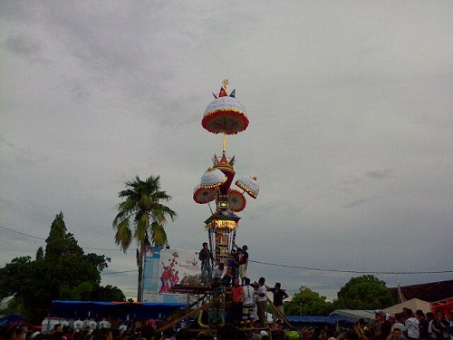
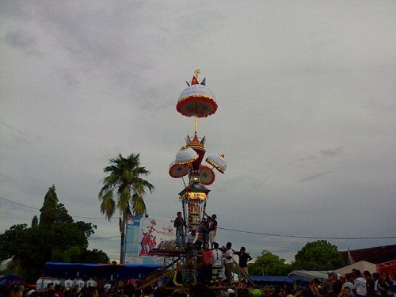
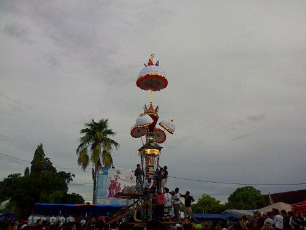

Tabuik Festival at Gondoriah Beach
Date : 10 muharam
Time : 10.00am - 07.00pm
 

Date : 10 muharam
Time : 10.00am - 07.00pm

Tabuik adalah perayaan lokal dalam rangka memperingati Asyura, gugurnya Imam Husain, cucu Muhammad, yang dilakukan oleh masyarakat Minangkabau di daerah pantai Sumatra Barat, khususnya di Kota Pariaman. Festival ini termasuk menampilkan kembali Pertempuran Karbala, dan memainkan drum tassa dan dhol. Tabuik merupakan istilah untuk usungan jenazah yang dibawa selama prosesi upacara tersebut. Walaupun awal mulanya merupakan upacara Syi'ah, akan tetapi penduduk terbanyak di Pariaman dan daerah lain yang melakukan upacara serupa, kebanyakan penganut Sunni. Di Bengkulu dikenal pula dengan nama Tabot.
Berikut lokasi dilaksanakannya tabuik